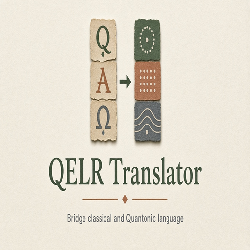
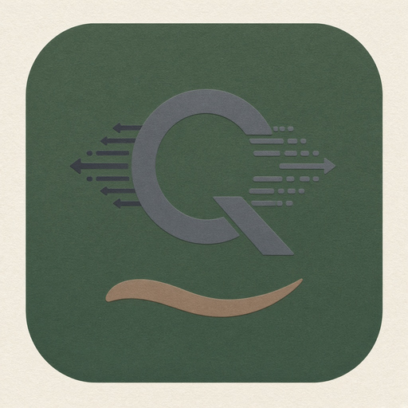
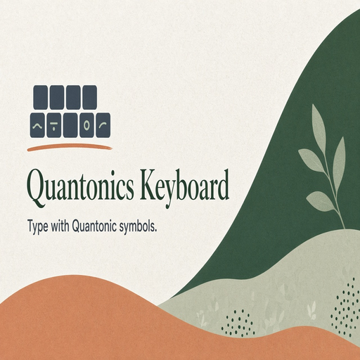

Phyllux apps hub
4. QELR language technology
15 modules in this Suite family. Soft launch lists the map; depth grows as Suite modules ship.

31. QELR TranslatorClassical English to Quantonics-style English.
32. Reverse QELR TranslatorQuantonics language back to conventional English.33. QELR Browser ExtensionHighlight classically problematic wording while browsing.
34. QELR Word ProcessorDesktop-class editor with Quantonics remediation.
35. QELR Grammar CheckerGrammarly-style checker for Quantonics remediation.
36. QELR DictionaryClassical meaning, Quantonics reading, examples, evolution.
37. Quantonic ThesaurusConceptual transformations, not mere synonyms.
38. Quantonic Vocabulary TrainerFlashcards for Quantonics terminology.
39. QELR Learning GameGamify converting classical statements.
40. QELR APIText in, remediated text and explanations out.

41. Quantonics KeyboardInput method with Quantonic symbols and vocabulary.42. Quantonic Font and SymbolsFonts and symbol packs for Quantonics notation.
43. Quantonics SpellcheckerRecognize coined Quantonics vocabulary.
44. Quantonics Writing AssistantHelp write using site terminology carefully.
45. Classical vs Quantonic ComparatorSide by side conceptual difference highlighter.